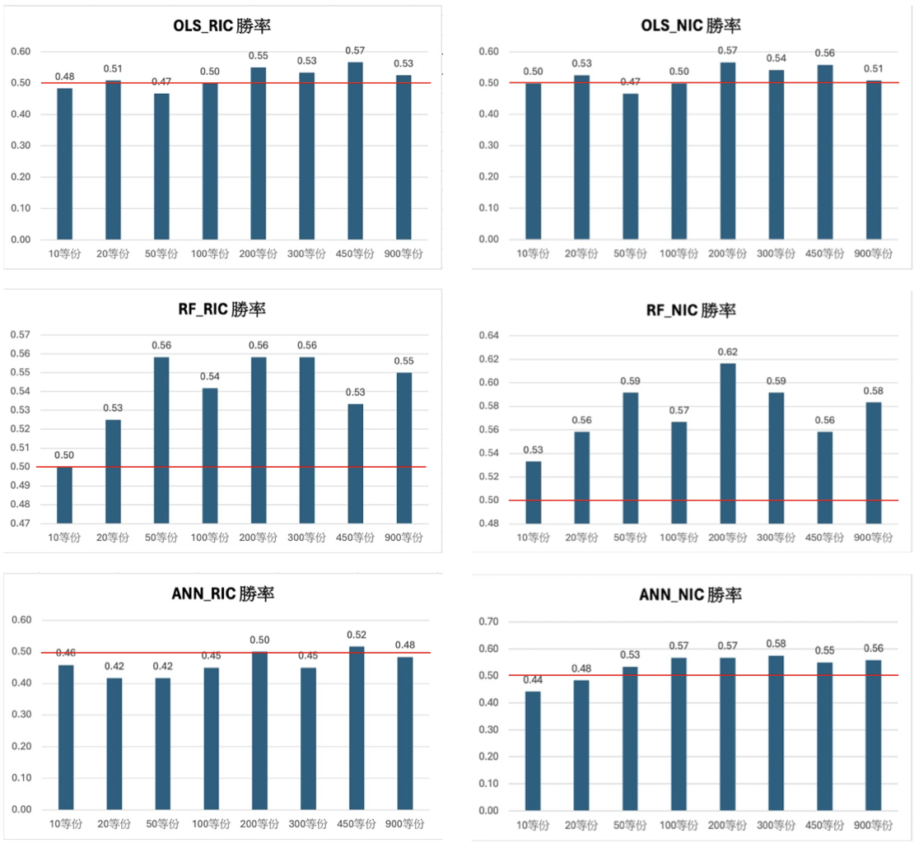

Factor Investing with Machine Learning
A brief English summary of this project. The full report (in Mandarin) is available below.
📄 Download Full Report (PDF)Abstract
Factor investing has grown with advances in machine learning and the availability of rich market data. Human decisions are prone to bias, while algorithmic analysis can uncover relationships that are not easily visible and improve portfolio construction. This project applies three machine learning models: OLS, Random Forest, and Neural Networks with varying layers, to predict next-month Information Coefficients (IC), including both Rank IC (RIC) and Normal IC (NIC), using factor signals such as Size, Book-to-Market, and Momentum. The predicted ICs are used to form long–short portfolios across multiple quantile partitions. Across quantiles, portfolios constructed from Random Forest predicted NIC consistently outperform the market, achieving higher win rates and stronger cumulative returns, especially at finer partitions (450 to 900 buckets). Overall, Random Forest with the three factors is the most reliable method for improving portfolio performance and stability among the tested models.
Methodology & Workflow
The workflow of this project follows a structured pipeline that links data extraction, machine learning prediction, and portfolio construction. Monthly TEJ data are first cleaned and transformed to compute the Size, Book-to-Market, and Momentum factors. Using these factor signals, three machine learning models—OLS, Random Forests, and Neural Networks—are trained to generate one-month-ahead predictions of Information Coefficients (ICs), including both Rank IC (RIC) and Normal IC (NIC).
Based on the predicted IC sign, stocks are sorted by their factor values and allocated into multiple quantile partitions (e.g., 10, 20, 50, 100, 200, 300, 450, and 900 buckets). When the predicted IC is positive, the strategy takes long positions in the highest quantile and short positions in the lowest quantile. When the IC is negative, the long–short positions are reversed. This framework allows us to evaluate how different machine learning models enhance predictive accuracy and improve portfolio performance across increasingly fine quantile structures.

Rank IC and Normal IC
Information Coefficients (ICs) measure how well a factor predicts future returns. In this project, we use two types of ICs: Rank IC (RIC) and Normal IC (NIC).
Rank IC (RIC)
Rank IC first converts raw factor values into cross-sectional ranks within each month, and then computes the correlation between these ranks and the realized returns in the next month. Let \(X_t = (X_{1t}, \ldots, X_{Nt})\) be the factor values at month \(t\), and \(R_{t+1} = (R_{1,t+1}, \ldots, R_{N,t+1})\) be the one-month-ahead returns. The Rank IC at month \(t\) is
\[ \mathrm{RIC}_t = \mathrm{Corr}\big( \operatorname{rank}(X_t),\, R_{t+1} \big). \]
Because it uses ranks instead of raw values, Rank IC is less sensitive to outliers and monotonic transformations of the factor, making it a robust measure of the cross-sectional ordering power of the factor.
Normal IC (NIC)
Normal IC directly computes the Pearson correlation between the raw factor values and the next-month returns. Using the same notation, the Normal IC at month \(t\) is
\[ \mathrm{NIC}_t = \mathrm{Corr}\big( X_t,\, R_{t+1} \big). \]
Normal IC is more sensitive to the magnitude of factor values and extreme observations, but it captures linear relationships between the factor and future returns. In this study, both RIC and NIC are predicted by machine learning models and then used to guide long–short portfolio construction.
Factor Definitions & Empirical Effects
This project examines three classic cross-sectional equity factors—Size, Book-to-Market (B/M), and Momentum (Mom)—which are widely used in asset pricing, factor investing, and machine-learning–based return prediction. Below we provide the definitions, mathematical formulations, and key empirical findings supporting each factor.
1. Size (Market Capitalization)
Size represents the total market capitalization of a firm and reflects its market position, visibility, and future prospects. Larger firms tend to be more stable, while smaller firms often exhibit higher risk and potentially higher returns.
\[ \text{Size}_{t} = \log(\text{MarketCap}_{t}) \]
where MarketCap = price × shares outstanding. The log transformation is used because market value tends to be large and skewed.
Small-Firm Effect
- Small-firm effect refers to the tendency for small-cap stocks to earn higher returns than large-cap stocks.
- Banz (1981): documented that return decreases as firm size increases.
- Reinganum (1981): showed that the smallest firms earn returns higher than CAPM predictions, with the effect concentrated in January.
2. Book-to-Market (B/M)
The Book-to-Market ratio compares a firm’s accounting value (book equity) with its market value, and is often used to identify undervalued (value) versus highly priced (growth) firms.
\[ \text{B/M}_{t} = \frac{\text{Book Equity}_{t}}{\text{MarketCap}_{t}} \]
Value Effect
- Firms with high B/M (value stocks) tend to earn higher returns than low B/M firms (growth stocks).
- Fama and French (1992): demonstrated that high-B/M portfolios significantly outperform low-B/M portfolios across NYSE, AMEX, and NASDAQ.
- Empirical results show the value premium can reach ~1.5% per month in some periods.
3. Momentum (Mom)
Momentum measures the tendency of assets that have performed well (poorly) in the past to continue performing well (poorly) in the near future.
\[ \text{Mom}_{t} = \ln\!\left(\frac{S_{t-1}}{S_{t-12}}\right) \]
where the factor uses the cumulative 12-month return from month \(t-12\) to \(t-1\). Using log return removes scale effects and avoids dependency on the base period.
Momentum Effect
- Stocks with strong past performance tend to continue outperforming weaker stocks.
- Jegadeesh & Titman (1993): showed that 6–12 month winners outperform losers by around 1% per month.
- Momentum is one of the strongest and most persistent anomalies in financial markets worldwide.
Results
We summarize three main findings from the IC-based long–short strategies built on Size, B/M, and Mom factors:
- Across all three models, portfolios constructed using predicted Rank IC (RIC) do not generate strong cumulative performance. Strategies based on Normal IC (NIC) consistently outperform those based on RIC.
- When using NIC, Random Forest (RF) and Artificial Neural Networks (ANN) clearly outperform OLS in both cumulative returns and win rates, highlighting the ability of machine learning models to capture non-linear relationships between factors and future returns.
- For RF- and ANN-based NIC strategies, we observe a clear pattern: the finer the quantile partition (e.g., from 10 to 900 buckets), the higher the cumulative return of the long–short portfolios.
Overall, the RF–NIC strategy is the best-performing approach in our IC-based long–short framework, delivering the highest cumulative returns together with a win rate exceeding 60%.
Cumulative Returns of IC-Based Long–Short Portfolios
ANN — RIC-based portfolios
ANN — NIC-based portfolios
Random Forest — RIC-based portfolios
Random Forest — NIC-based portfolios
OLS — RIC-based portfolios
OLS — NIC-based portfolios
Win Rates Across Quantile Portfolios
RF–NIC achieves both the highest cumulative return and a win rate above 60%, confirming it as the most effective model in our IC-based long–short setting.